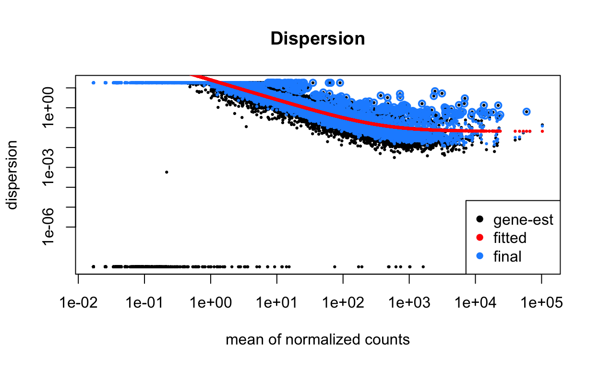
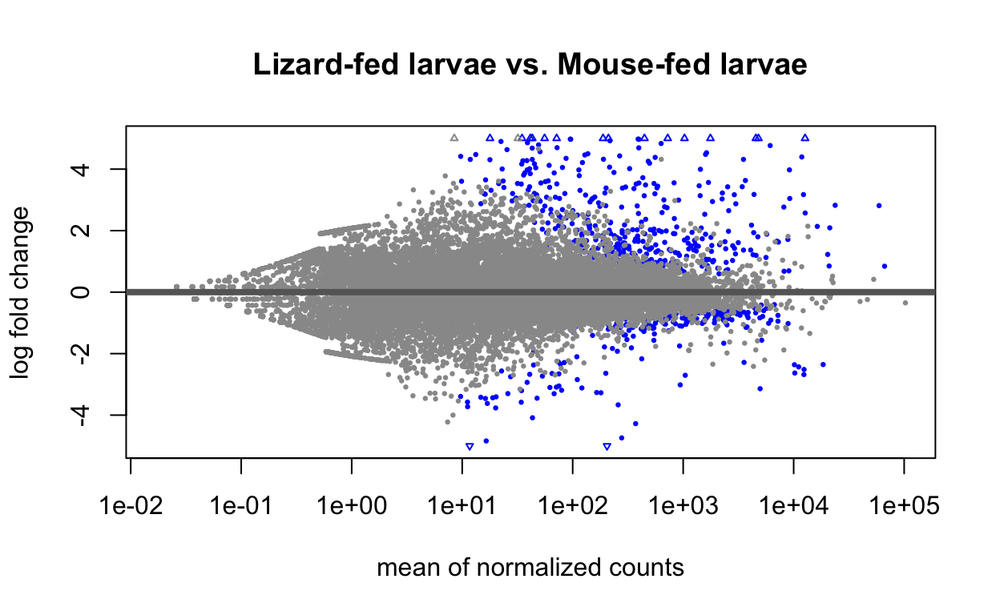

Host blood meal experiment- Ixodes pacificus mapped to ISE6 (Ixodes scapularis) |
purpose: generate DESeq2 results objects of DE genes
input: path to directory which contains (at any level) counts files from the same
experiment (and only the same experiment)
output: sample heatmap, PCA, pairwise DE comparisons, MA plots, volvano plots
written for and by: the chou lab
modified by: anne sapiro (annesapiro@gmail.com), kacie ring (kacie.ring@gmail.com), fauna yarza, chase mateusiak
input files for this code can be downloaded from through GEO
DESeq2 – differential gene expression
libraries will be installed and loaded via the librarian package (https://cran.r-project.org/web/packages/librarian/vignettes/intro-to-librarian.html) you need the librarian package and Biobase installed for this to work. if needed,
# install.packages("librarian") # uncomment to use
# biobase, for installing packages from Bioconductor
#if (!requireNamespace("BiocManager", quietly = TRUE)) #uncomment these 3 lines to install
# install.packages("BiocManager")
#BiocManager::install("Biobase")
librarian::shelf(DESeq2, ggplot2, ggfortify, tidyverse, pheatmap, RColorBrewer, cluster, broom, ggforce, EnhancedVolcano)
# point to directory with raw read counts, in this case called `counts_for_deseq`
quantDir <- file.path('Bloodmeal_quants')
# add an output directory called analysis
#import counts files (finds all files ending in counts.cut.txt in count directory)
sampleFiles <- grep('counts.cut.txt', list.files(quantDir), value = TRUE)
#print out the files found
#sampleFiles
#for each file (in alphabetical order, see prited out list), write what group it belongs to
sampleCondition<-c("posBb_MF","posBb_MF","posBb_MF","posBb_LF","posBb_LF","posBb_LF","negBb_MF","negBb_MF","negBb_MF","negBb_LF","negBb_LF","negBb_LF", "UF_MF","UF_MF","UF_MF","UF_LF","UF_LF","UF_LF")
#create sample table
sampleTable<-data.frame(sampleName=sampleFiles, fileName=sampleFiles, condition=sampleCondition)
#double check to make sure it all looks good
sampleTable
sampleName
1 BbMf_PPema_05_S9.counts.cut.txt
2 BbMf_PPema_07_S11.counts.cut.txt
3 BbMf_PPema_08_S12.counts.cut.txt
4 BbSf_PScoc_05_S13.counts.cut.txt
5 BbSf_PScoc_06_S14.counts.cut.txt
6 BbSf_PScoc_07_S15.counts.cut.txt
7 EnMf_PPema_09_S17.counts.cut.txt
8 EnMf_PPema_10_sub_S18.counts.cut.txt
9 EnMf_PPema_12_S20.counts.cut.txt
10 EnSf_Pscoc_09_S21.counts.cut.txt
11 EnSf_Pscoc_11_S23.counts.cut.txt
12 EnSf_Pscoc_12_S24.counts.cut.txt
13 UF_PPema_02_S2.counts.cut.txt
14 UF_PPema_03_S3.counts.cut.txt
15 UF_PPema_04_S4.counts.cut.txt
16 UF_PScoc_02_S6.counts.cut.txt
17 UF_PScoc_03_S7.counts.cut.txt
18 UF_PScoc_04_S8.counts.cut.txt
fileName condition
1 BbMf_PPema_05_S9.counts.cut.txt posBb_MF
2 BbMf_PPema_07_S11.counts.cut.txt posBb_MF
3 BbMf_PPema_08_S12.counts.cut.txt posBb_MF
4 BbSf_PScoc_05_S13.counts.cut.txt posBb_LF
5 BbSf_PScoc_06_S14.counts.cut.txt posBb_LF
6 BbSf_PScoc_07_S15.counts.cut.txt posBb_LF
7 EnMf_PPema_09_S17.counts.cut.txt negBb_MF
8 EnMf_PPema_10_sub_S18.counts.cut.txt negBb_MF
9 EnMf_PPema_12_S20.counts.cut.txt negBb_MF
10 EnSf_Pscoc_09_S21.counts.cut.txt negBb_LF
11 EnSf_Pscoc_11_S23.counts.cut.txt negBb_LF
12 EnSf_Pscoc_12_S24.counts.cut.txt negBb_LF
13 UF_PPema_02_S2.counts.cut.txt UF_MF
14 UF_PPema_03_S3.counts.cut.txt UF_MF
15 UF_PPema_04_S4.counts.cut.txt UF_MF
16 UF_PScoc_02_S6.counts.cut.txt UF_LF
17 UF_PScoc_03_S7.counts.cut.txt UF_LF
18 UF_PScoc_04_S8.counts.cut.txt UF_LF# pull all of the info into deseq
ddsHTSeq<-DESeqDataSetFromHTSeqCount(sampleTable=sampleTable, directory=quantDir, design=~condition)
#### look at dds object
colSums(assay(ddsHTSeq))
BbMf_PPema_05_S9.counts.cut.txt
2582984
BbMf_PPema_07_S11.counts.cut.txt
10866198
BbMf_PPema_08_S12.counts.cut.txt
2977429
BbSf_PScoc_05_S13.counts.cut.txt
16231688
BbSf_PScoc_06_S14.counts.cut.txt
6965725
BbSf_PScoc_07_S15.counts.cut.txt
7119374
EnMf_PPema_09_S17.counts.cut.txt
1200452
EnMf_PPema_10_sub_S18.counts.cut.txt
3355043
EnMf_PPema_12_S20.counts.cut.txt
1768561
EnSf_Pscoc_09_S21.counts.cut.txt
7820405
EnSf_Pscoc_11_S23.counts.cut.txt
6454308
EnSf_Pscoc_12_S24.counts.cut.txt
2259631
UF_PPema_02_S2.counts.cut.txt
5871590
UF_PPema_03_S3.counts.cut.txt
6053778
UF_PPema_04_S4.counts.cut.txt
6111004
UF_PScoc_02_S6.counts.cut.txt
5671841
UF_PScoc_03_S7.counts.cut.txt
4696105
UF_PScoc_04_S8.counts.cut.txt
7467188 colData(ddsHTSeq)
DataFrame with 18 rows and 1 column
condition
<factor>
BbMf_PPema_05_S9.counts.cut.txt posBb_MF
BbMf_PPema_07_S11.counts.cut.txt posBb_MF
BbMf_PPema_08_S12.counts.cut.txt posBb_MF
BbSf_PScoc_05_S13.counts.cut.txt posBb_LF
BbSf_PScoc_06_S14.counts.cut.txt posBb_LF
... ...
UF_PPema_03_S3.counts.cut.txt UF_MF
UF_PPema_04_S4.counts.cut.txt UF_MF
UF_PScoc_02_S6.counts.cut.txt UF_LF
UF_PScoc_03_S7.counts.cut.txt UF_LF
UF_PScoc_04_S8.counts.cut.txt UF_LFrowData(ddsHTSeq)
DataFrame with 30518 rows and 0 columnswriteLines(capture.output(sessionInfo()), "sessionInfo.txt")
#### check the percent of genes without zero counts.
# count number of genes
geneCounts <- counts(ddsHTSeq)
# make logical maxtrix of genes with (true) and without (false) zero count
indexNotZero <- apply(geneCounts, 1, function(x) {all (x > 0)})
# display percent of genes with zero counts
sum(indexNotZero == TRUE)/nrow(assay(ddsHTSeq))
[1] 0.2217708#normalize data - log transformation
rld <- rlogTransformation(ddsHTSeq, blind=TRUE)
#str(rld)
#calculate sample-to-sample distances
distsRL <- dist(t(assay(rld)))
#distsRL
#create a matrix of sample-tosample distances
mat <- as.matrix(distsRL)
rownames(mat) <- colData(rld)$condition
colnames(mat) <- colData(rld)$condition
#view(mat)
#generate heatmap based on sample-to-sample distances
hmcol <- colorRampPalette(brewer.pal(9, "Blues"))(255)
#pheatmap(mat, trace="none", col = rev(hmcol), margin=c(13, 13))
heatmap <- pheatmap(mat, trace="none", col = rev(hmcol), margin=c(13, 13))
quartz_off_screen
2 # PCA
# from the vignette re: vst : DESeq2 offers transformations for count data that stabilize the variance across the mean: the regularize logarithm (rlog) and the variance stabilizing transformation (VST).
# These have slightly different implementations, discussed a bit in the DESeq2 paper and in the vignette, but a similar goal of stablizing the variance across the range of values.
# Both produce log2-like values for high counts
#normalize data using variance stabilizing transformation
vsd <- vst(ddsHTSeq)
#apply the dist function to the transpose of the transformed count matrix to get sample-to-sample distances.
#create a matrix - columns=variables and rows=samples
distsVS <- dist(t(assay(vsd)))
pca_matrix <- as.matrix(distsVS)
rownames(pca_matrix) <- colData(vsd)$condition
colnames(pca_matrix) <- colData(vsd)$condition
# Transpose the matrix so that rows = samples and columns = variables
pca_matrix <- t(pca_matrix)
#view(pca_matrix)
sample_pca <- prcomp(pca_matrix)
#look at the first 16 rows and columns
#pca_matrix[1:16, 1:16]
#convert matrix into a tibble
as_tibble(pca_matrix)
# A tibble: 18 × 18
posBb_MF V2 V3 posBb_LF V5 V6 negBb_MF V8 V9
<dbl> <dbl> <dbl> <dbl> <dbl> <dbl> <dbl> <dbl> <dbl>
1 0 111. 125. 111. 117. 118. 149. 117. 145.
2 111. 0 103. 75.7 84.8 84.4 132. 91.0 128.
3 125. 103. 0 104. 108. 112. 143. 108. 138.
4 111. 75.7 104. 0 83.0 81.7 133. 93.3 129.
5 117. 84.8 108. 83.0 0 91.3 134. 99.2 131.
6 118. 84.4 112. 81.7 91.3 0 135. 103. 133.
7 149. 132. 143. 133. 134. 135. 0 134. 153.
8 117. 91.0 108. 93.3 99.2 103. 134. 0 133.
9 145. 128. 138. 129. 131. 133. 153. 133. 0
10 122. 86.4 113. 84.4 92.1 92.3 135. 103. 133.
11 113. 90.7 115. 87.3 98.2 96.6 141. 104. 137.
12 129. 111. 130. 110. 115. 116. 148. 121. 147.
13 195. 195. 200. 192. 202. 199. 230. 203. 222.
14 192. 192. 197. 188. 198. 196. 228. 199. 219.
15 195. 195. 199. 192. 201. 199. 230. 202. 222.
16 179. 176. 184. 172. 182. 180. 214. 184. 206.
17 186. 185. 191. 181. 190. 188. 221. 193. 213.
18 182. 180. 187. 175. 186. 183. 217. 189. 210.
# … with 9 more variables: negBb_LF <dbl>, V11 <dbl>, V12 <dbl>,
# UF_MF <dbl>, V14 <dbl>, V15 <dbl>, UF_LF <dbl>, V17 <dbl>,
# V18 <dbl>as_tibble(pca_matrix, rownames = "sample")
# A tibble: 18 × 19
sample posBb_MF V2 V3 posBb_LF V5 V6 negBb_MF V8
<chr> <dbl> <dbl> <dbl> <dbl> <dbl> <dbl> <dbl> <dbl>
1 posBb_MF 0 111. 125. 111. 117. 118. 149. 117.
2 posBb_MF 111. 0 103. 75.7 84.8 84.4 132. 91.0
3 posBb_MF 125. 103. 0 104. 108. 112. 143. 108.
4 posBb_LF 111. 75.7 104. 0 83.0 81.7 133. 93.3
5 posBb_LF 117. 84.8 108. 83.0 0 91.3 134. 99.2
6 posBb_LF 118. 84.4 112. 81.7 91.3 0 135. 103.
7 negBb_MF 149. 132. 143. 133. 134. 135. 0 134.
8 negBb_MF 117. 91.0 108. 93.3 99.2 103. 134. 0
9 negBb_MF 145. 128. 138. 129. 131. 133. 153. 133.
10 negBb_LF 122. 86.4 113. 84.4 92.1 92.3 135. 103.
11 negBb_LF 113. 90.7 115. 87.3 98.2 96.6 141. 104.
12 negBb_LF 129. 111. 130. 110. 115. 116. 148. 121.
13 UF_MF 195. 195. 200. 192. 202. 199. 230. 203.
14 UF_MF 192. 192. 197. 188. 198. 196. 228. 199.
15 UF_MF 195. 195. 199. 192. 201. 199. 230. 202.
16 UF_LF 179. 176. 184. 172. 182. 180. 214. 184.
17 UF_LF 186. 185. 191. 181. 190. 188. 221. 193.
18 UF_LF 182. 180. 187. 175. 186. 183. 217. 189.
# … with 10 more variables: V9 <dbl>, negBb_LF <dbl>, V11 <dbl>,
# V12 <dbl>, UF_MF <dbl>, V14 <dbl>, V15 <dbl>, UF_LF <dbl>,
# V17 <dbl>, V18 <dbl># A tibble: 3 × 3
...1 ...2 ...3
<dbl> <dbl> <dbl>
1 1 0 0
2 0 1 0
3 0 0 1#Eigenvalues - these represent the variance explained by each PC.
#We can use these to calculate the proportion of variance in the original data that each axis explains.
tidy(sample_pca, matrix = "eigenvalues")
# A tibble: 18 × 4
PC std.dev percent cumulative
<dbl> <dbl> <dbl> <dbl>
1 1 2.06e+ 2 0.758 0.758
2 2 5.87e+ 1 0.0616 0.820
3 3 3.72e+ 1 0.0247 0.844
4 4 3.33e+ 1 0.0198 0.864
5 5 3.18e+ 1 0.0180 0.882
6 6 2.98e+ 1 0.0159 0.898
7 7 2.86e+ 1 0.0146 0.913
8 8 2.53e+ 1 0.0114 0.924
9 9 2.45e+ 1 0.0107 0.935
10 10 2.43e+ 1 0.0106 0.945
11 11 2.24e+ 1 0.00897 0.954
12 12 2.23e+ 1 0.00887 0.963
13 13 2.20e+ 1 0.00864 0.972
14 14 2.07e+ 1 0.00768 0.980
15 15 2.04e+ 1 0.00743 0.987
16 16 1.99e+ 1 0.00708 0.994
17 17 1.82e+ 1 0.00591 1
18 18 5.21e-15 0 1 #This table can easily be used to produce a Scree Plot, which shows the fraction of total variance explained by each principal component.
tidy(sample_pca, matrix = "eigenvalues") %>%
ggplot(aes(x = factor(PC))) +
geom_col(aes(y = percent)) +
geom_line(aes(y = cumulative, group = 1)) +
geom_point(aes(y = cumulative)) +
labs(x = "Principal component", y = "Fraction variance explained")
# The PC scores are stored in the "x" value of the prcomp object, which is a matrix
pc_scores <- sample_pca$x
#calculate percent PCA
percentage <- round(sample_pca$sdev / sum(sample_pca$sdev) * 100, 2)
percentage <- paste( colnames(sample_pca), "(", paste( as.character(percentage), "%", ")", sep="") )
# Make PCA plot
pca_plot <- pc_scores %>%
# convert it to a tibble retaining the sample names as a new column
as_tibble(rownames = "sample") %>%
# create the plot
ggplot(aes(PC1,PC2, color = sample)) +
geom_point() +
expand_limits(x = -250, y = -210) +
xlab(percentage[1]) +
ylab(percentage[2]) +
#use ggforce when < 4 replicates per sample condition
ggforce::geom_mark_ellipse(aes(fill = sample,
color = sample))
#pdf(file="PCA.pdf")
pca_plot
dev.off()
null device
1 ### plot dispersion
ddsHTSeq_disp <- estimateSizeFactors(ddsHTSeq)
ddsHTSeq_disp <- estimateDispersions(ddsHTSeq_disp)
plotDispEsts(ddsHTSeq_disp, main = "Dispersion")

# create DESeq object
dds <- DESeq(ddsHTSeq, betaPrior = TRUE)
########################### create results objects. There are two ways to do this: ##################################
#
# pairwise comparison for differential expression (things that increase in PScoc will be + numbers)
#Comparison below is for Unfed nymphs with either a lizard(LF) of mouse(MF) larval bloodmeal
res_UFlizard_UFmouse <- results (dds, contrast = c('condition', 'UF_LF','UF_MF'))
res_UFlizard_UFmouse <- res_UFlizard_UFmouse[order(res_UFlizard_UFmouse $padj),]
#head(res_UFlizard_UFmouse)
# make an MA plot to visualize data
#pdf(file="res_UFlizard_UFmouse_maplot.pdf")
plotMA(res_UFlizard_UFmouse, ylim=c(-5,5), main="Lizard-fed larvae vs. Mouse-fed larvae")

# print out the results file as a csv
#write.csv(as.data.frame(res_UFlizard_UFmouse),file="res_UFlizard_UFmouse.csv", quote=F)
# you can copy and paste ^ code for any other pairwise comparisons, just change the groups/names
#for unfed vs. engorged, we changed sample conditions (in Line 58) to
#sampleCondition<-c("Unfed","Unfed","Unfed","Unfed","Unfed","Unfed", "Engorged","Engorged","Engorged","Engorged","Engorged","Engorged","Engorged","Engorged","Engorged","Engorged","Engorged","Engorged")
#our deseq comparison was as follows
#res_Engorged_Unfed <- results (dds, contrast = c('condition','Engorged', 'Unfed'))
normCounts <- counts(dds, normalized=TRUE)
#write.csv(normCounts, file='Host_Legacy_normCounts.csv', quote=F)
# you can copy and paste ^ code for any other pairwise comparisons, just change the groups/names
Volcano plots visualize differentially expressed genes in the above pairwise comparision
dataframe <- res_UFlizard_UFmouse
#head(dataframe)
#Enhanced volcano plot script
EnhancedVolcano (dataframe,
lab = rownames(dataframe),
x = 'log2FoldChange',
y = 'padj',
drawConnectors =FALSE,
colConnectors = '#d55e00',
#transcriptPointSize = 3.0, ## changes size of points
title = 'results_of_deseq_comparison',
xlim = c(-5, 5), ## x axis limit
ylim = c(0,10),## y axis limit
xlab = bquote(~Log[2]~ 'fold change'), ## label of x axis
ylab = bquote(~-Log[10]~adjusted~italic(P)), ## label of y axis
pCutoff = 0.1, ## p values that are being considered significant
col = c('grey30', '#56B4E9', '#0072B2', '#009E73'), ## uses a color blind friendly pallete from here http://www.cookbook-r.com/Graphs/Colors_(ggplot2)/
colAlpha = 0.7, ## from 0 to 1 this changes how opaque the points are
cutoffLineType = 'dotted',
gridlines.major = FALSE, ## gets rid of grid marks from the background
gridlines.minor = FALSE)
#ggsave('results_of_deseq_comparison_plot_logandPadj_labeled2.pdf', width = 15, height = 12, units = c("in"),
# dpi = 300)